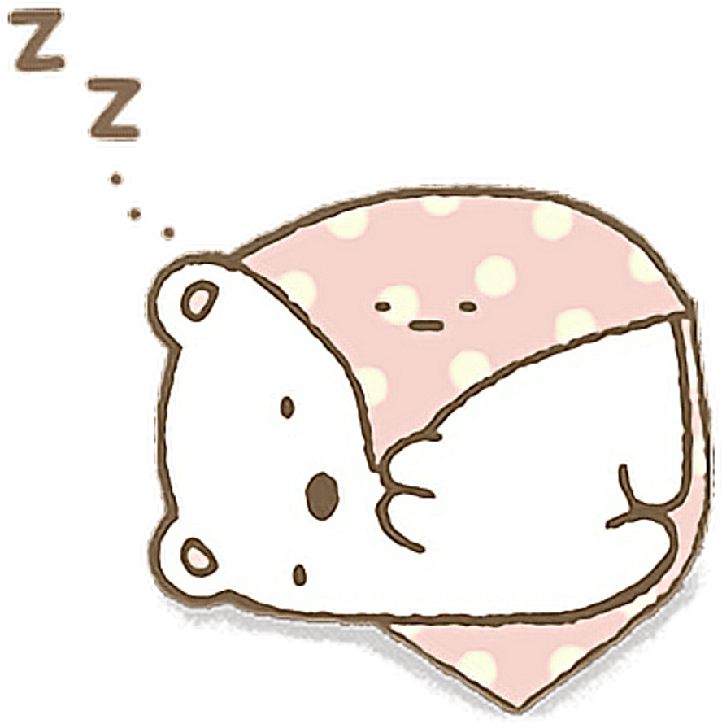
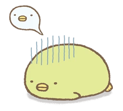
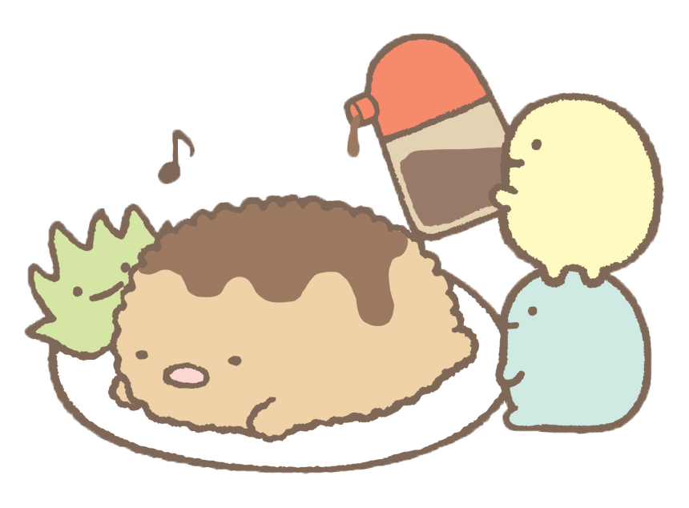
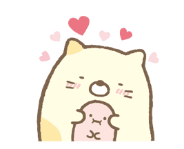
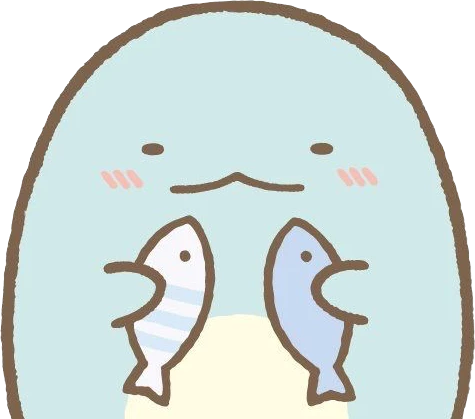
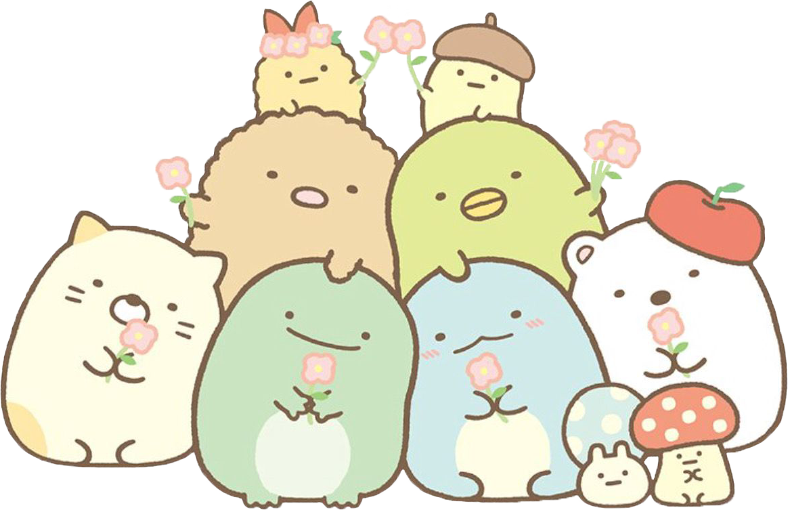

Sumikko Gurashi
Sumikko Gurashi is a set of fictional characters who live a quiet and solitary life in the corner. They might be able to settle down when they’re in the corners but they don’t like being in the center of the room. When they’re taken to the center of the room, they always rush back to the corner. We sell plushies, videos, movies, and other merchandise featuring the cuteness and solitary life of "Sumikkogurashi".
Meet Our Main Characters
Click on each character to learn more.
-
Shirokuma
-
Penguin?
-
Tonkatsu
-
Neko
-
Tokage





Have questions or suggestions? Let us know!
* required
